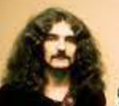
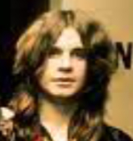
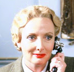
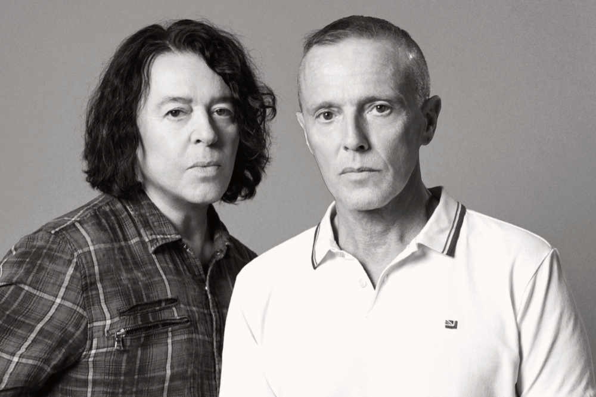

Electrophile...
"We design to serve our clients, without reducing our end-user to 'data-prey'. The process of deeply understanding our clients' messages, while maintaining an outsiders perspective, always brings us to that elusive middle ground."
- Jan, designer
"Knowing how to say something is much easier when you know what you want to say. Identifying our clients' essential vision is my starting point. I then enjoy the puzzle of putting together the right copy for the demands of a given format."
- Simeon, copywriter
“Building a bespoke application requires effective, methodical testing - and lots of it, too. Many unexpected things can go wrong. Along with my team of software experts, I identify and fix structural and security problems before they arise.”
- Helga, chaos engineer
...builds sites and apps that are informative, look good and are enjoyable to use. The company was founded in 2020 by Lars and Sven Lundgren, two brothers who went into business together. While our clients have included names like 360 Org, the Union of Concerned Scientists and the NYC Transit Authority, we also work with smaller clients. Some of our favourite projects have been our local school's website as well as an app (you've probably heard of 'Claws') for a nationwide cat shelter network.
(from left) Lars and Sven Lundgren